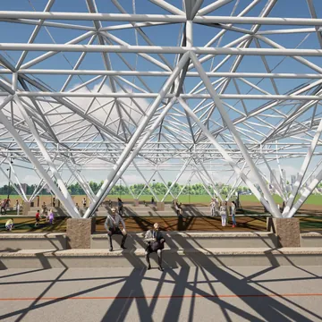

Aeropuerto de CartagenaInfraestructura

SD4A —Structural Design For Art— aborda la ingeniería como la aplicación del arte a la construcción: soluciones estructurales innovadoras, funcionales y con impacto visual positivo.Misión
Proporcionar soluciones de ingeniería estructural de alta calidad que mejoren la vida de las personas. Implementamos soluciones innovadoras y sostenibles con altos estándares de seguridad y eficiencia, dentro del presupuesto y del plazo.
Visión
Liderar la industria de la ingeniería estructural ofreciendo soluciones innovadoras, sostenibles y seguras para los desafíos del futuro.
Valores
- Compromiso — calidad y eficiencia en cada entrega.
- Honestidad — transparencia e integridad.
- Ética profesional — respeto por el cliente y la norma.
- Creatividad — soluciones originales.
- Excelencia — mejora continua.